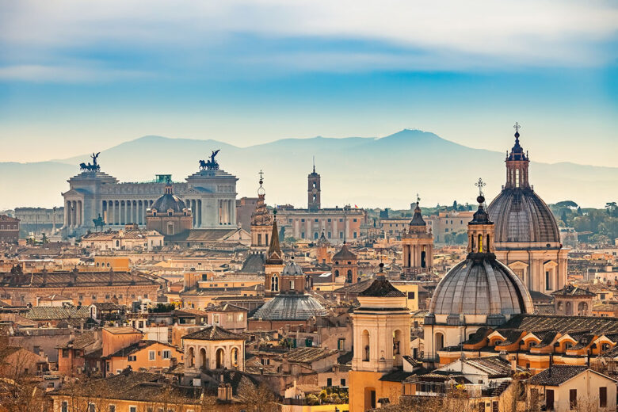
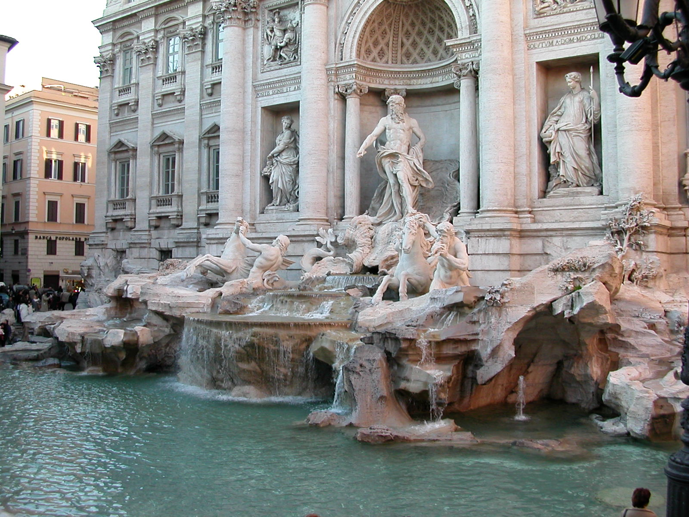
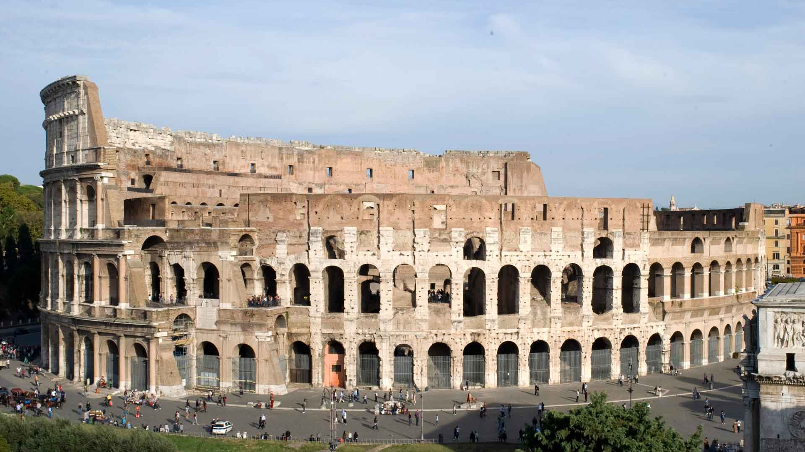
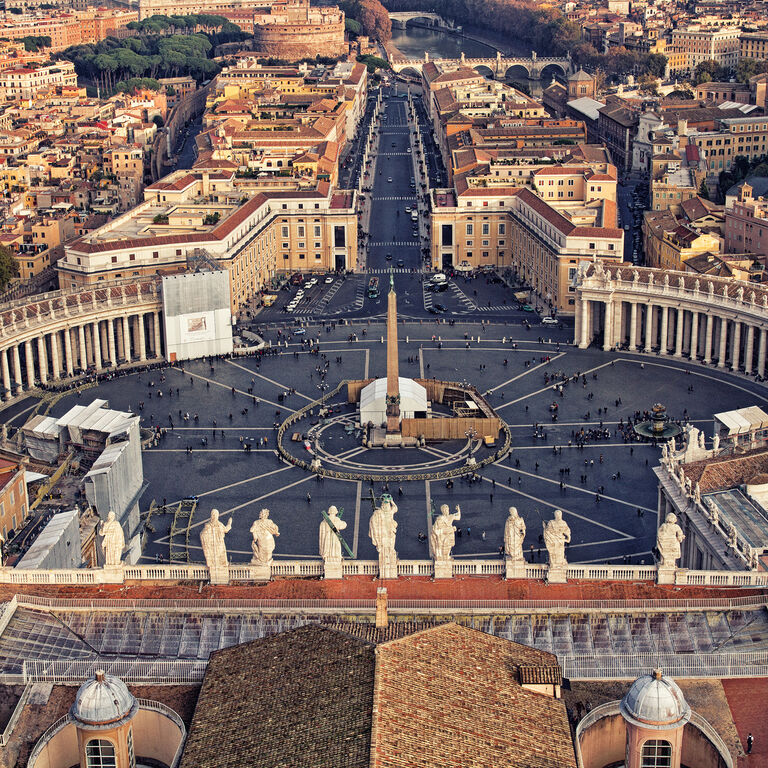

SEE THE WORLD |
| Home | News | Contact | About |
Visit Rome |
|  |
Rome (Italian and Latin: Roma [ˈroːma] (About this soundlisten)) is the capital city of Italy. It is also the capital of the Lazio region, the centre of the Metropolitan City of Rome, and a special comune named Comune di Roma Capitale. With 2,860,009 residents in 1,285 km2 (496.1 sq mi),[1] Rome is the country's most populated comune and the third most populous city in the European Union by population within city limits. The Metropolitan City of Rome, with a population of 4,355,725 residents, is the most populous metropolitan city in Italy.[2] Its metropolitan area is the third-most populous within Italy.[3] Rome is located in the central-western portion of the Italian Peninsula, within Lazio (Latium), along the shores of the Tiber. Vatican City (the smallest country in the world)[4] is an independent country inside the city boundaries of Rome, the only existing example of a country within a city; for this reason, Rome has sometimes been described as the capital of two states.[5][6] Rome is often referred to as the City of Seven Hills due to its geographic location and also the "Eternal City."[7] Rome's history spans 28 centuries. While Roman mythology dates the founding of Rome at around 753 BC, the site has been inhabited for much longer, making it a major human settlement for almost three millennia and one of the oldest continuously occupied cities in Europe.[8] The city's early population originated from a mix of Latins, Etruscans, and Sabines. Eventually, the city successively became the capital of the Roman Kingdom, the Roman Republic and the Roman Empire, and is regarded by many as the first-ever Imperial city and metropolis. Read more... |
|
The Trevi Fountain (Italian: Fontana di Trevi) is a fountain in the Trevi district in Rome, Italy, designed by Italian architect Nicola Salvi and completed by Giuseppe Pannini and several others. Standing 26.3 metres (86 ft) high and 49.15 metres (161.3 ft) wide,[1] it is the largest Baroque fountain in the city and one of the most famous fountains in the world. The fountain has appeared in several films, including Roman Holiday (1953), the eponymous Three Coins in the Fountain (1954), Federico Fellini's classic La Dolce Vita (1960), The Lizzie McGuire Movie (2003), and Sabrina Goes to Rome (1998). The fountain at the junction of three roads (tre vie)[3] marks the terminal point[4] of the "modern" Acqua Vergine, the revived Aqua Virgo, one of the aqueducts that supplied water to ancient Rome. In 19 BC, supposedly with the help of a virgin, Roman technicians located a source of pure water some 13 km (8.1 mi) from the city. (This scene is presented on the present fountain's façade.) However, the eventual indirect route of the aqueduct made its length some 22 km (14 mi). This Aqua Virgo led the water into the Baths of Agrippa. It served Rome for more than 400 years. In 1629, Pope Urban VIII, finding the earlier fountain insufficiently dramatic, asked Gian Lorenzo Bernini to sketch possible renovations, but the project was abandoned when the pope died. Though Bernini's project was never constructed, there are many Bernini touches in the fountain as it exists today. An early, influential model by Pietro da Cortona, preserved in the Albertina, Vienna, also exists, as do various early 18th century sketches, most unsigned, as well as a project attributed to Nicola Michetti[8] one attributed to Ferdinando Fuga[9] and a French design by Edmé Bouchardon.[5] Competitions had become popular during the Baroque era to design buildings, fountains, as well as the Spanish Steps. In 1730, Pope Clement XII organized a contest in which Nicola Salvi initially lost to Alessandro Galilei – but due to the outcry in Rome over a Florentine having won, Salvi was awarded the commission anyway.[10] Work began in 1732. Read more... |
 |
|  |
|  |
Vatican City (/ˈvætɪkən/ (About this soundlisten)), officially the Vatican City State (Italian: Stato della Città del Vaticano;[e] Latin: Status Civitatis Vaticanae),[f][g] is an independent city state and enclave located within Rome, Italy.[11][12] The Vatican City State, also known simply as the Vatican, became independent from Italy with the Lateran Treaty (1929), and it is a distinct territory under "full ownership, exclusive dominion, and sovereign authority and jurisdiction" of the Holy See, itself a sovereign entity of international law, which maintains the city state's temporal, diplomatic, and spiritual independence.[h][13] With an area of 49 hectares (121 acres)[b] and a population of about 825,[8] it is the smallest state in the world by both area and population.[14] As governed by the Holy See, the Vatican City State is an ecclesiastical or sacerdotal-monarchical state (a type of theocracy) ruled by the pope who is the bishop of Rome and head of the Catholic Church.[3][15] The highest state functionaries are all Catholic clergy of various national origins. After the Avignon Papacy (1309–1437),[16] the popes have mainly resided at the Apostolic Palace within what is now Vatican City, although at times residing instead in the Quirinal Palace in Rome or elsewhere. Defined as a public space in the last years of 15th century, when the city market was transferred there from the Campidoglio, Piazza Navona was transformed into a highly significant example of Baroque Roman architecture and art during the pontificate of Innocent X, who reigned from 1644 until 1655, and whose family palace. Read more... |
| Home | News | Contact | About |
|
All rights reserved! © |
|||